Capítulo 3. Cuantificar el riesgo
Los dos capítulos anteriores dejaron un problema bien planteado y un método a medias. Sabemos qué convierte un dato en identificante (capítulo 1) y hemos visto a un adversario romper defensas reales con código (capítulo 2). Falta el paso que separa la anécdota de la ingeniería: convertir esa amenaza en un número que se pueda comparar con un umbral, discutir en un comité y volver a calcular dentro de seis meses.
Ese paso tiene más trampas de las que parece, y este capítulo las recorre todas. Empieza por las tres métricas clásicas —\(k\)-anonimato, \(l\)-diversidad y \(t\)-cercanía—, que son el vocabulario obligado de cualquier conversación sobre anonimización y que, medidas sobre nuestros datos, resultan valer bastante menos de lo que su fama sugiere. Sigue por el problema estadístico de fondo —estimar la unicidad en la población cuando solo se observa una muestra—, donde comprobaremos que el estimador que todo el mundo usa por inercia llega a multiplicar el riesgo por 68. Continúa con los tres modelos de riesgo que la literatura sanitaria consolidó —el fiscal, el periodista y el comercial—, que sobre el mismo conjunto de datos dan cifras separadas por tres órdenes de magnitud. Y termina con el artefacto que debería producir todo lo anterior: un informe de riesgo reproducible, generado por un script versionado, con sus hipótesis declaradas y su fecha de caducidad.
Una advertencia sobre el tono de este capítulo, porque es el más incómodo del libro. Su conclusión no es «use usted estas métricas», sino algo más matizado y más útil: las métricas sintácticas son necesarias y no son suficientes. Necesarias porque sin número no hay decisión defendible, ni ante un comité de ética ni ante la AEPD. Insuficientes porque cada una tapa el agujero de la anterior y ninguna tapa el conocimiento externo del adversario, que es infinito por el supuesto A2 del capítulo 1. Quien salga de aquí sabiendo medir y sabiendo qué no capturan sus medidas estará listo para la Parte II, que es donde aparecen las garantías que sí cierran el problema.
Las tres métricas clásicas
\(k\)-anonimato: esconderse en el grupo
La idea es la del capítulo 1: si una fila comparte su combinación de cuasi-identificadores con otras, el adversario no puede distinguirla. Basta con exigir un mínimo. El modelo se formuló en 1998 (Samarati y Sweeney 1998) —junto con el propio concepto de cuasi-identificador y con la generalización y la supresión como mecanismos— y se difundió con el artículo de 2002 (Sweeney 2002b), cuyo hermano del mismo número recoge los algoritmos (Sweeney 2002a).
Una tabla \(T\) satisface \(k\)-anonimato respecto de un cuasi-identificador \(Q\) si toda clase de equivalencia (definición [def:clase]) tiene al menos \(k\) filas: \[\min_{x \in T} \; \bigl\lvert [x]_Q \bigr\rvert \;\geq\; k .\]
La propiedad es intuitiva y tiene una lectura probabilística directa: bajo el supuesto de que el objetivo del adversario está en la tabla, la probabilidad de acertar cuál es su fila es como mucho \(1/k\). De ahí la costumbre de fijar \(k=5\) —riesgo del 20 % en el peor caso— o \(k=11\) en publicaciones sanitarias, que es el umbral que manejan buena parte de las guías del sector.
Ahora bien, la definición esconde una propiedad que decide casi todo lo demás: \(k\) es un mínimo. No describe la tabla, describe su peor fila. Una publicación de veinte mil registros en la que diecinueve mil novecientos estén en clases de cincuenta personas y cien estén solos tiene \(k=1\), exactamente igual que una tabla donde todos estén solos. Nuestros datos lo ilustran sin piedad, como se verá en la sección 1.2.
\(l\)-diversidad: que el grupo no sea unánime
Machanavajjhala et al. (2007) observaron que \(k\)-anonimato protege la identidad y no el secreto, y lo demostraron con dos ataques que conviene tener presentes porque siguen apareciendo en auditorías reales.
El ataque de homogeneidad: si todas las filas de una clase comparten el valor sensible —las tres personas de la clase tienen asma—, el adversario que sepa que su objetivo está en esa clase conoce su diagnóstico sin necesidad de distinguir la fila. El \(k\)-anonimato se cumple; la privacidad, no.
El ataque de conocimiento de fondo: si la clase tiene dos valores y el adversario sabe algo del objetivo que descarta uno de ellos —que es un hombre y el otro valor es un cáncer de ovario—, vuelve a quedarse con una sola posibilidad.
Una clase de equivalencia es \(l\)-diversa si contiene al menos \(l\) valores «bien representados» del atributo sensible; la tabla lo es si todas sus clases lo son. Las dos variantes que usaremos: la entrópica, que exige que la entropía de la distribución sensible dentro de la clase sea al menos \(\log l\) —es decir, que los valores no solo estén, sino que estén repartidos—, y la que la literatura posterior llamó distinta, que se limita a contar valores diferentes.
Dos precisiones de atribución que casi nunca se hacen y que conviene fijar aquí. La primera: el nombre «\(l\)-diversidad distinta» no aparece en el artículo original; procede de la sistematización que hicieron Li et al. (2007) al presentar \(t\)-cercanía. La segunda: la idea de exigir entropía dentro de la clase es anterior, y los propios autores de \(l\)-diversidad reconocen la prioridad de Øhrn y Ohno-Machado (1999).
La variante entrópica merece atención porque expresa mejor la intuición. Una clase con noventa y nueve «ninguno» y un «VIH» tiene dos valores distintos —y por tanto \(l=2\) en la variante simple— pero su entropía es de 0,08 bits: el adversario sabe con un 99 % de confianza cuál es el diagnóstico. La forma entrópica lo detecta; la simple, no.
\(t\)-cercanía: que el grupo se parezca al todo
Li et al. (2007) dieron el paso siguiente al mostrar que \(l\)-diversidad tampoco basta, otra vez con dos ataques.
El ataque de sesgo (skewness): si en la población el 1 % tiene una enfermedad y en una clase la tiene el 50 %, la clase puede ser perfectamente \(l\)-diversa y sin embargo multiplicar por cincuenta la sospecha sobre cualquiera de sus miembros. Lo que importa no es cuántos valores hay, sino cuánto ha cambiado la creencia del adversario.
El ataque de similitud: una clase con «gastritis», «úlcera» y «reflujo» tiene tres valores distintos, pero los tres son enfermedades digestivas. Formalmente diversa, materialmente unánime.
Una clase de equivalencia satisface \(t\)-cercanía si la distancia entre la distribución del atributo sensible dentro de la clase y su distribución en la tabla completa no supera \(t\). Li et al. proponen la distancia de Earth Mover, que respeta la proximidad semántica entre valores; para atributos categóricos sin orden natural, la distancia de variación total —la mitad de la distancia \(L_1\)— es su análogo directo, y es la que implementa el código de este libro.
La figura 1.1 resume los dos ataques que motivan cada métrica. Conviene leerla como una escalera de parches: cada criterio nace de un fallo del anterior, y ninguno es la garantía final —razón por la cual la Parte II cambia de estrategia en lugar de añadir una letra griega más—.
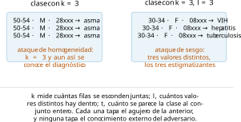
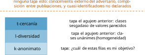
Lo que ninguna de las tres captura
Antes de medir, conviene enumerar los cuatro agujeros que las tres comparten, porque son los que llevan a la Parte II; la figura 1.2 los sitúa fuera del recuadro que las métricas cubren.
Composición. Dos publicaciones que por separado cumplen \(k\)-anonimato pueden, juntas, no cumplirlo: basta que las clases de una corten a las de la otra. Es el ataque de composición que formalizan Ganta et al. (2008): no existe una regla de composición para estas métricas, y sin ella no se puede gobernar un programa de publicación continuo —justo lo que hace cualquier organismo estadístico—.
Conocimiento externo. Todas suponen que el adversario conoce los cuasi-identificadores declarados y nada más. El supuesto A2 dice lo contrario, y el capítulo 2 lo demostró con la usuaria de AOL.
Elección del cuasi-identificador. Las tres métricas se calculan dado un conjunto \(Q\). Si el analista olvida una columna —la fecha de ingreso, el hospital, la traza de comportamiento—, el número sale bien y la publicación está rota. La métrica no puede avisar de lo que no se le ha dicho que mire.
Datos dispersos y de alta dimensión. Sobre trazas, transacciones o texto, alcanzar \(k=5\) exige destruir la utilidad entera, por la aritmética de la sección [sec:cap02-dispersion]. Estas métricas nacieron para tablas demográficas pequeñas y siguen siendo razonables ahí; fuera de ese terreno, no.
Las métricas, medidas
Toca ejecutar. El script src/cap03/metricas_medidas.py recorre una escalera de generalización sobre el dataset del libro: seis peldaños que van de los datos en crudo a la combinación de franja etaria, sexo y provincia, calculando en cada uno las tres métricas, los riesgos y la utilidad restante —medida como la entropía conjunta del cuasi-identificador, es decir, cuánta capacidad de distinguir sobrevive para el analista—.
| Peldaño | clases | únicas | riesgo medio | utilidad | \(k\) |
|---|---|---|---|---|---|
| crudo | 19 945 | 99,5 % | 0,997 | 14,3 | 1 |
| sin profesión | 19 556 | 95,8 % | 0,978 | 14,2 | 1 |
| CP a 3 dígitos | 12 106 | 42,9 % | 0,605 | 13,2 | 1 |
| edad en quinquenios | 6 591 | 17,5 % | 0,330 | 11,8 | 1 |
| provincia | 1 874 | 1,1 % | 0,094 | 10,0 | 1 |
| franja etaria | 518 | 0,0 % | 0,026 | 8,2 | 1 |
La tabla 1.1 contiene el resultado más instructivo del capítulo, y conviene detenerse en la última columna. El riesgo medio cae de 0,997 a 0,026 —un factor de casi cuarenta—, las filas únicas pasan del 99,5 % a prácticamente ninguna, y \(k\) sigue valiendo 1 en los seis peldaños. La razón es la que anunciaba la sección 1.1.1: en el último peldaño quedan apenas un puñado de personas solas —mayores de 65 años en provincias pequeñas, sobre todo— y basta con ellas para que el mínimo no se mueva.
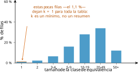
La figura 1.3 lo dibuja. La lección práctica es doble. Primero, que informar solo de \(k\) es informar del peor caso, lo cual está bien para un umbral duro y muy mal para describir una publicación: hay que dar también la distribución. Segundo, que la generalización sola no alcanza umbrales de \(k\) razonables sobre datos reales; hace falta suprimir.
El precio de la supresión
Todo algoritmo de \(k\)-anonimización real combina las dos herramientas: generaliza hasta donde la utilidad aguanta y suprime lo que queda por debajo del umbral. Medir cuánto hay que suprimir en cada peldaño da la tercera cifra que un informe honesto necesita.
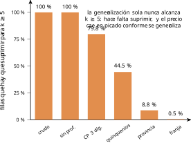
Los números de la figura 1.4 son elocuentes. Con los datos en crudo habría que suprimir la tabla entera. Con el código postal a tres dígitos, el 79,8 %. Con provincia y quinquenios, el 8,8 %. Y con franja etaria, provincia y sexo, solo el 0,48 % —noventa y seis personas de veinte mil—. La conclusión operativa es que generalizar y suprimir no son alternativas sino complementos, y que el orden importa: generalizar primero abarata la supresión de forma no lineal.
Queda la pregunta incómoda: ¿a quién se suprime? A los raros. Es el mismo dilema ético del efecto cebolla (sección [sec:cap02-cebolla]) con otro disfraz: la publicación resultante describe peor a las minorías, que es la población para la que más suele hacer falta la estadística pública. Ningún ajuste de \(k\) resuelve eso; solo lo hace explícito.
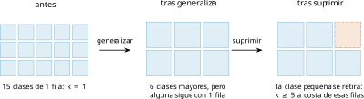
Cómo se alcanza \(k\): los algoritmos
La escalera de la tabla 1.1 la hemos recorrido a mano, peldaño a peldaño, y eso basta para entender el problema. En la práctica se resuelve con algoritmos, y conviene conocer sus nombres porque son los que implementan las herramientas del sector.
Los algoritmos originales están en el artículo hermano del modelo (Sweeney 2002a), un detalle bibliográfico que se confunde constantemente porque ambos comparten número de revista. El primer resultado que hay que tener presente es negativo: encontrar la \(k\)-anonimización óptima es NP-difícil (Meyerson y Williams 2004), entendiendo por óptima la que minimiza la información destruida. Toda herramienta usable es, por tanto, heurística, y su calidad se juzga por cuánta utilidad conserva. La figura 1.5 muestra el efecto de las dos palancas sobre las clases de equivalencia. Las tres familias clásicas:
Generalización global —Datafly, Incognito—: elige un nivel de la jerarquía por columna y lo aplica a toda la tabla. Es lo que hace nuestra escalera. Ventaja: la tabla resultante es homogénea y fácil de interpretar. Inconveniente: para proteger a la persona más rara hay que generalizar a todo el mundo.
Generalización local o multidimensional —Mondrian (LeFevre et al. 2006)—: particiona el espacio de cuasi-identificadores en regiones y generaliza cada una por separado, de modo que las zonas densas conservan resolución. Conserva bastante más utilidad; el capítulo 4 lo implementa.
Supresión: retirar filas o celdas, casi siempre combinada con las anteriores, como acabamos de medir.
Las implementaciones de referencia, por si el lector quiere medir sin programar: ARX (Prasser et al. 2020), que cubre las tres métricas, los modelos de riesgo y buena parte de los algoritmos; sdcMicro (Templ et al. 2015) para quien trabaje en R; y \(\mu\)-ARGUS, la herramienta clásica de los institutos estadísticos europeos, que no tiene artículo académico propio y se cita por su manual. Ninguna sustituye al análisis: eligen por uno las hipótesis por defecto, y esas hipótesis son justamente lo que hay que declarar.
Una nota práctica que ahorra disgustos: estas herramientas piden que el usuario declare la jerarquía de generalización de cada columna —qué es «un nivel más arriba» para un código postal, para una edad, para un diagnóstico CIE-10—. Esa declaración no es un detalle técnico: es una decisión editorial que determina qué análisis sobrevivirán, y es donde conviene sentar al epidemiólogo o al analista que va a usar los datos.
Utilidad y riesgo, otra vez la frontera
Poniendo las dos columnas de la tabla una frente a otra aparece, medida, la frontera que el capítulo 1 dibujó a mano.
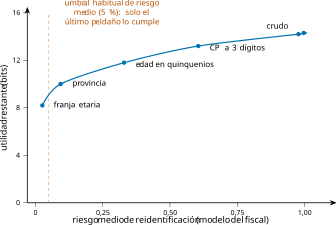
La forma de la curva en la figura 1.6 es la información que un comité necesita. Los primeros peldaños son baratos: pasar de crudo a código postal de tres dígitos cuesta 1,1 bits de utilidad y devuelve una reducción del riesgo del 40 %. Los últimos son caros: bajar de provincia a franja etaria cuesta 1,8 bits para ganar siete puntos de riesgo. Entre medias hay un codo, y ese codo —no el umbral – es lo que hay que discutir.
Nótese también lo que la curva no dice: nada sobre qué análisis seguirán siendo válidos. La entropía es una medida de utilidad genérica y cómoda; un informe serio la acompañaría de métricas de utilidad específicas de los análisis previstos —error en las tasas de incidencia por provincia, por ejemplo—. Volveremos a ello en el capítulo 5, donde la utilidad se medirá contra la consulta concreta que se quiere responder.
De la muestra a la población
Hasta aquí hemos medido sobre la tabla que tenemos. Pero la pregunta que importa es otra, y ya apareció en el capítulo 1: ¿cuántas de estas filas serían únicas en la población? Es la diferencia entre «esta persona es la única de la tabla con este perfil» y «esta persona es la única de España», que es la que decide si el adversario acierta.
Por qué el estimador obvio está mal
El estimador que se usa por inercia es la unicidad de la muestra tal cual. La proposición [prop:muestra] ya dijo que sobreestima; lo que faltaba era saber cuánto. El script src/cap03/unicidad_poblacional.py lo mide usando nuestra población sintética como población y muestras suyas como muestras, de modo que la verdad es conocida:
unicidad REAL con {edad5, sexo, provincia}: 1.12%
f= 1% ingenuo=75.90% (x67.8) poisson-gamma= 0.00%
f= 5% ingenuo=40.72% (x36.4) poisson-gamma= 0.00%
f=20% ingenuo=12.30% (x11.0) poisson-gamma= 0.76%
f=50% ingenuo= 3.49% (x 3.1) poisson-gamma= 1.23%Con una muestra del 1 % —una fracción muy común en un estudio clínico o en una encuesta—, el estimador ingenuo dice que el 75,9 % de las filas son únicas cuando en realidad lo es el 1,12 %: multiplica el riesgo por 68. Un equipo que tomara decisiones con ese número o bien no publicaría nada, o bien destruiría la utilidad de sus datos para protegerse de un peligro que no existe con esa magnitud. El error es caro en las dos direcciones.
Modelos de superpoblación
La corrección clásica consiste en postular un modelo para el tamaño poblacional de cada clase y estimar sus parámetros con lo observado. Si una clase aparece \(n_j\) veces en una muestra que cubre una fracción \(f\) de la población, su tamaño poblacional esperado es \(n_j/f\), y bajo un modelo de Poisson la probabilidad de que esa clase tenga exactamente un individuo es \[\Pr[F_j = 1] \;=\; \lambda_j e^{-\lambda_j}, \qquad \lambda_j = n_j / f .\] Es el mismo \(\lambda\) del capítulo 1, ahora al servicio de la estimación. El problema de este modelo, y la razón de que en nuestra medición se hunda a cero con muestras pequeñas, es que supone homogeneidad: que todas las clases tienen el mismo tamaño esperado. En una población real hay clases enormes (mujeres de 40 a 44 en Madrid) y clases minúsculas (hombres de 95 a 99 en Soria), y esa heterogeneidad cambia el resultado.
El remedio estándar es el modelo Poisson-Gamma: se admite que cada clase tiene su propio \(\lambda_j\) y que esos valores se distribuyen según una Gamma cuyos parámetros se estiman de los datos. La probabilidad de que una clase observada una sola vez no tenga a nadie más en la población resulta ser \[\Pr[\text{resto}=0 \mid n_j] \;=\; \left( \frac{1/\beta + f}{1/\beta + 1} \right)^{\alpha + n_j},\] con \(\alpha\) y \(\beta\) ajustados por momentos sobre los recuentos observados. La figura 1.7 compara los dos estimadores con la verdad.
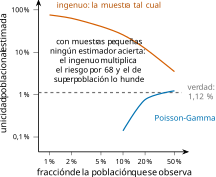
El resultado es honesto y conviene no maquillarlo: el Poisson-Gamma acierta razonablemente cuando se observa la mitad de la población (1,23 % estimado frente a 1,12 % real, un 10 % de error) y subestima gravemente con muestras pequeñas, hasta dar cero. Es decir, cambia la dirección del error: donde el ingenuo asusta de más, el de superpoblación tranquiliza de más. Ninguno de los dos es utilizable a ciegas con fracciones muestrales del 1 %.
Qué hacer, entonces
De esa incomodidad salen tres reglas prácticas que este libro adopta.
Declarar la fracción muestral y el estimador. Un número de riesgo sin esas dos coordenadas no es interpretable. La mayoría de los informes que circulan omiten ambas.
Dar un intervalo, no un punto. Con muestras pequeñas la respuesta honesta es «entre el 1 % y el 8 %, según el modelo», y esa horquilla es información útil: dice que hace falta más muestra o un modelo mejor antes de decidir.
Usar modelos ajustados a los datos cuando la decisión sea grave. Es lo que hacen Rocher et al. (2019) con modelos generativos que capturan la dependencia entre atributos, y es el camino que sigue la práctica moderna. Su resultado del 99,98 % de reidentificabilidad con quince atributos, que citamos en el capítulo 1, sale precisamente de estimar bien esta magnitud, no de contar filas únicas en una muestra.
Cuando no se conoce la fracción muestral
Todo lo anterior supone conocer \(f\), la fracción de la población que la tabla representa. En la práctica rara vez se sabe con precisión, y conviene tener claras las tres situaciones.
La muestra es la población. Es el caso del censo, del padrón o del registro completo de una consejería: \(f = 1\) y no hay nada que estimar, porque la unicidad muestral es la poblacional. Es la situación más cómoda estadísticamente y la más peligrosa en la práctica, porque no hay ningún colchón: cada fila única lo es de verdad.
Se conoce \(f\) razonablemente. Un registro hospitalario respecto de la población de su área de influencia, una encuesta con diseño muestral documentado. Aquí los estimadores de la sección 1.3.2 tienen sentido, con la cautela de que la muestra casi nunca es aleatoria: los pacientes de un hospital están sesgados por edad y morbilidad, y ese sesgo hace que las clases raras en la población estén sobrerrepresentadas.
No se conoce \(f\). Es lo más común en datos secundarios: una tabla que llega de un tercero, sin documentación del muestreo. La tentación es suponer un \(f\) favorable; la respuesta correcta es tratar el caso como el primero. Si no se puede sostener con evidencia que la tabla es una muestra pequeña de una población grande, se calcula el riesgo como si la muestra fuera la población, que es el supuesto conservador. Es la misma disciplina del capítulo 2: cuando falta información sobre el adversario, se le supone el máximo.
El riesgo no es el daño
Una última advertencia antes de los modelos, porque es la que más se olvida en los comités. Todo este capítulo mide probabilidad de reidentificación. El daño de una reidentificación es otra cosa, y no aparece en ninguna fórmula.
Reidentificar a alguien en un registro de altas por apendicitis y reidentificarlo en uno de interrupciones voluntarias del embarazo tienen la misma probabilidad si las tablas tienen la misma estructura, y consecuencias incomparables. Del mismo modo, el daño depende de quién sea la persona —una figura pública, una persona en situación de violencia de género, un menor— y del contexto social, que cambia con el tiempo: información inocua hoy puede ser peligrosa tras un cambio político o legal.
De ahí tres reglas que este libro adopta y que el capítulo 14 formalizará dentro de la evaluación de impacto:
El umbral se fija por dato, no por organización. Un único umbral corporativo para «datos personales» ignora que la sensibilidad varía en órdenes de magnitud.
La severidad se documenta junto a la probabilidad. Un informe de riesgo que solo da probabilidades está incompleto: debe decir qué pasaría si la reidentificación ocurriese.
Los grupos vulnerables se evalúan aparte. La media oculta a las minorías, y son ellas quienes concentran a la vez el riesgo (por raras) y el daño (por vulnerables).
Los tres modelos de riesgo
Falta una pieza para que los números signifiquen algo: decir qué adversario los produce. La literatura de datos sanitarios consolidó tres modelos que conviene manejar con soltura, porque son el vocabulario con el que se discute con un comité o con una autoridad.
El fiscal (prosecutor). Tiene un objetivo concreto y sabe que está en la tabla: un investigador, un familiar, un empleador. El riesgo de una fila es \(1/\lvert[x]_Q\rvert\) calculado sobre la propia tabla.
El periodista (journalist). Tiene un objetivo concreto pero no sabe si está en la tabla, que es una muestra de una población mayor. El riesgo se calcula con el tamaño de la clase en la población, siempre mayor o igual, de modo que sale menor.
El comercial (marketer). No le interesa nadie en particular sino reidentificar a muchos: le vale acertar en promedio (Dankar y El Emam 2010).
Conviene deshacer aquí una confusión extendida, porque cambia las cuentas. Circula la idea de que «fiscal» significa riesgo máximo y «periodista» riesgo medio. No es así: hay dos ejes independientes. El primero es qué población usa el adversario para formar las clases —la tabla (fiscal) o la población de referencia (periodista)—. El segundo es cómo se agrega el riesgo de las filas —el máximo, que retrata a la persona peor protegida, o la media, que retrata a la publicación—. Los dos ejes se combinan: existe un riesgo máximo del periodista y un riesgo medio del fiscal, y ambos se usan. El modelo del comercial, en cambio, es intrínsecamente medio, porque su objetivo es el volumen. La tabla 1.2 ordena las cuatro casillas.
| clases sobre la tabla (fiscal) | clases sobre la población (periodista) | |
|---|---|---|
| máximo | la persona peor protegida del conjunto; el criterio de \(k\)-anonimato | la persona peor protegida suponiendo muestreo; el criterio de \(k\)-map |
| media | riesgo de la publicación si el adversario sabe que sus objetivos están dentro | riesgo del comercial: cuántos puede reidentificar en promedio |
Dos avisos más sobre esta terna, ambos importantes para un lector europeo. El primero: la formalización procede de la literatura sanitaria norteamericana —el modelo del fiscal y el del periodista en El Emam y Dankar (2008), el del comercial dos años después (Dankar y El Emam 2010)— y no tiene respaldo en la doctrina europea: ni el RGPD ni el EDPB la mencionan. Es un marco de trabajo útil, no una obligación normativa. El segundo: la propia guía NIST considera ya esa terminología heredada y de connotaciones desafortunadas (Garfinkel et al. 2023), de modo que en un informe conviene describir el modelo —qué sabe el adversario y cómo se agrega— antes que apoyarse en la etiqueta.
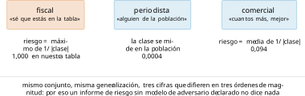
La figura 1.8 muestra el resultado sobre nuestro peldaño «provincia», y la distancia entre las tres cifras es la moraleja entera de la sección: 1,000 para el fiscal en el peor caso, 0,094 para el comercial, 0,0004 para el periodista. Tres órdenes de magnitud de diferencia sin cambiar un solo dato. Quien elige el modelo elige el resultado, y por eso el modelo va declarado en el informe, antes que las medidas.
Una advertencia sobre el riesgo del periodista, que es el más favorable y por tanto el más tentador: su cálculo depende de suponer que la muestra es aleatoria respecto de la población de referencia. En un registro hospitalario esa hipótesis es sencillamente falsa —los pacientes de un hospital no son una muestra aleatoria de la provincia—, y usarlo entonces es maquillar el número. La regla prudente es la que aplica también NIST en su guía de desidentificación: cuando no se puede sostener la hipótesis de muestreo, se usa el modelo del fiscal (Garfinkel et al. 2023).
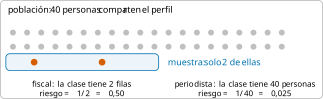
Dos primos cercanos: \(k\)-map y \(\delta\)-presencia
Los tres modelos anteriores tienen dos parientes que aparecen en las herramientas y en las guías, y que conviene distinguir bien.
El \(k\)-map relaja el \(k\)-anonimato en la dirección del periodista: no exige que cada clase tenga \(k\) filas en la tabla, sino que se corresponda con al menos \(k\) personas en la población. Es mucho menos destructivo —una clase de una sola fila puede ser aceptable si en la población hay cincuenta personas con ese perfil— y por eso NIST lo recomienda para publicaciones que son muestras (Garfinkel et al. 2023). Su precio es que exige conocer o estimar la población, con toda la incertidumbre de la sección 1.3. La figura 1.9 contrasta las dos cuentas sobre el mismo perfil.
La \(\delta\)-presencia contesta a otra pregunta, y a menudo la más grave: no «¿quién es esta fila?» sino «¿está fulano en esta tabla?». Si la tabla es el registro de una clínica de adicciones, la mera pertenencia es el dato sensible —es la inferencia de pertenencia del capítulo 2, ahora sobre una tabla en vez de sobre un modelo—. Una publicación puede ser impecable en \(k\), \(l\) y \(t\) y seguir revelando presencia, porque esas tres métricas dan por supuesto que se sabe quién está dentro.
La lección de conjunto: cada métrica responde a una pregunta distinta, y elegirla es elegir de qué se protege uno. La tabla 1.3 las ordena por la pregunta que contestan, que es como deberían presentarse en un informe.
| Pregunta del adversario | Métrica que la acota | Hipótesis que exige |
|---|---|---|
| ¿cuál de estas filas es mi objetivo? | \(k\)-anonimato; \(k\)-map | saber que está en la tabla (o la población) |
| ¿qué valor sensible tiene? | \(l\)-diversidad, \(t\)-cercanía | haberlo localizado en una clase |
| ¿está mi objetivo en esta tabla? | \(\delta\)-presencia | conocer la población de referencia |
| ¿a cuántos puedo reidentificar? | riesgo medio (comercial) | ninguna sobre individuos concretos |
De dónde salen los umbrales
Queda la pregunta que todo equipo hace en cuanto ve los números: ¿y qué valor es aceptable? Merece una sección propia porque la respuesta honesta —«depende, y menos de lo que parece está escrito»— suele sorprender.
La vía estadounidense: reglas o experto
La normativa sanitaria estadounidense ofrece dos caminos, y su contraste es muy instructivo. El primero es una lista: retirar dieciocho tipos de identificadores —nombre, teléfono, fechas más finas que el año, códigos postales a cinco dígitos salvo agregación, etcétera— y dar el resultado por desidentificado. Es objetivo, barato y comprobable; también es rígido, y no dice nada sobre el riesgo real del conjunto concreto.
El segundo es la determinación por experto: una persona cualificada certifica, con métodos estadísticos documentados, que el riesgo de reidentificación es «muy pequeño». La norma deliberadamente no fija el número, y de ahí que la práctica haya consolidado umbrales de facto que conviene saber de dónde vienen, porque circulan sin apellido. El \(k\) de 5 y el de 11 proceden de la costumbre profesional del sector sanitario. El riesgo medio de 0,09, que se cita a menudo como si fuera un estándar general, procede de una guía de la Agencia Europea del Medicamento para la publicación de informes clínicos (European Medicines Agency 2018): es sectorial, es una recomendación y es expresamente derogable. Y ninguno de los dos procede de NIST, que —conviene subrayarlo porque es el error de atribución más común en este terreno— no publica ningún umbral numérico en su guía de desidentificación (Garfinkel et al. 2023).
La vía europea: tres criterios, ningún número
El enfoque europeo es distinto y conviene entenderlo bien porque es el que aplica en España. El Grupo del Artículo 29 —predecesor del EDPB— fijó en su dictamen sobre técnicas de anonimización tres criterios que una técnica debe superar para que el resultado se considere anónimo (Article 29 Data Protection Working Party 2014): que no permita singularizar a un individuo, que no permita vincular registros de la misma persona, y que no permita inferir información sobre ella. Son tres preguntas cualitativas, no un umbral numérico, y esa es una decisión consciente: un número fijo envejecería mal ante fuentes auxiliares nuevas —otra vez el supuesto A2—.
Ese dictamen, que tiene ya más de una década, está siendo sustituido: el EDPB adoptó en julio de 2026 unas directrices sobre anonimización (European Data Protection Board 2026) que refinan los tres criterios. A la fecha de redacción de este capítulo siguen en consulta pública —la fase se cierra a finales de octubre de 2026— y por tanto no son texto final: conviene citarlas como borrador y volver a comprobar su estado antes de apoyarse en ellas.
La consecuencia práctica para un equipo español es la que este libro adopta: el número no lo da la norma, lo da el análisis, y la norma exige que el análisis esté documentado. De ahí que el artefacto de la sección 1.7 —con sus hipótesis declaradas, su modelo de adversario y su caducidad— no sea burocracia sino exactamente lo que hay que poder enseñar. La Opinion 28/2024 del EDPB (European Data Protection Board 2024) refuerza esa lectura al exigir que la anonimidad se demuestre caso por caso.
Las referencias técnicas que sostienen ese análisis son las mismas de siempre: ISO/IEC 27559 (ISO/IEC 27559 2022) para el marco de gestión del riesgo a lo largo del ciclo de vida, y NIST SP 800-188 (Garfinkel et al. 2023) para el instrumental de medida y la elección del modelo de adversario.
Cómo fijar un umbral defendible
Con todo lo anterior, la receta que este libro propone tiene cuatro pasos y ninguno es un número mágico:
Estimar el daño, no solo la probabilidad. Un riesgo del 5 % sobre un diagnóstico de VIH y un riesgo del 5 % sobre la marca de coche no son el mismo problema.
Elegir el modelo de adversario según quién puede acceder de verdad a la publicación —abierta, bajo acuerdo, interna— y antes de ver los resultados.
Fijar el umbral y escribirlo antes de medir, con su justificación y su referencia sectorial.
Medir, decidir y fechar, dejando constancia de las mitigaciones aplicadas y de lo que se perdió con ellas.
Medir la utilidad, no solo el riesgo
Un informe que solo mide riesgo empuja siempre en la misma dirección: generalizar más, suprimir más, publicar menos. Para que la decisión sea informada hace falta la otra mitad —cuánto se pierde—, y aquí también hay una trampa que conviene destapar.
La utilidad se puede medir de dos maneras. Con métricas genéricas —la entropía que hemos usado, la granularidad media, el número de clases—, que son cómodas, comparables y no dicen nada sobre si el análisis que uno quiere hacer seguirá siendo válido. O con métricas específicas de la tarea: el error en la respuesta a las consultas que motivaron la publicación.
Nuestro dataset permite verlo. Supongamos que la publicación existe para responder a una consulta epidemiológica concreta: la prevalencia de cada diagnóstico por provincia. El script mide el error de esa consulta sobre la tabla ya anonimizada —generalizada y suprimida hasta \(k\geq5\)— frente a la verdad:
CP a 3 dígitos suprimir 79.8% -> error 11.63 puntos
edad en quinquenios suprimir 44.5% -> error 5.20 puntos
provincia suprimir 8.8% -> error 2.41 puntos
franja etaria suprimir 0.5% -> error 0.50 puntos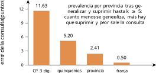
El resultado de la figura 1.10 es contraintuitivo para quien viene de la métrica genérica y es de enorme valor práctico. Según la entropía, generalizar «cuesta» utilidad de forma monótona: el peldaño de franja etaria es el que menos información conserva (8,2 bits frente a 14,3). Según la consulta que de verdad importa, ese mismo peldaño es el mejor de todos, con un error de medio punto porcentual, porque exige suprimir a casi nadie. El peldaño intermedio —código postal a tres dígitos, que parecía conservar mucha información— destroza la consulta con casi doce puntos de error, porque para alcanzar \(k\geq5\) hay que tirar cuatro de cada cinco filas y las que se tiran no son aleatorias: son las de las zonas menos pobladas.
De ahí la regla que cierra la sección, y que vale para todo el resto del libro: la utilidad se mide contra la pregunta que la publicación quiere responder, no en abstracto. Una anonimización que conserva muchos bits y arruina el análisis previsto es peor que otra que conserva pocos y lo mantiene intacto. En el capítulo 5, cuando haya que elegir el valor de \(\eps\), el criterio será exactamente este.
El informe de riesgo como artefacto
Cierro el capítulo con lo que debería salir de todo lo anterior. No un PDF que alguien redacta al final del proyecto, sino un artefacto reproducible: la salida de un script versionado que cualquiera puede volver a ejecutar y obtener lo mismo.
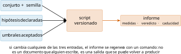
El script src/cap03/informe_riesgo.py lo implementa para nuestro dataset. Sus cuatro secciones son las que este libro propone como mínimo defendible:
1. Identificación y trazabilidad. Qué conjunto, con qué semilla, con qué versión del código. Sin esto el informe no es reproducible y por tanto no es verificable.
2. Hipótesis declaradas. Qué se publica, qué columnas se consideran cuasi-identificadores, cuál es el atributo sensible, cuál es la población de referencia, qué adversario se supone y qué umbrales se aceptan. Es la sección que más discusiones ahorra y la que más informes omiten.
3. Medidas. Las tres métricas, los tres riesgos, la distribución de tamaños de clase y la fracción de filas únicas. No una cifra: el cuadro.
4. Veredicto y caducidad. Publicable o no, con qué mitigación, y cuándo se repite. Un informe de riesgo sin fecha de caducidad contradice el supuesto A2: el mundo cambia, aparecen fuentes auxiliares nuevas y el número de hoy no vale para siempre.
Sobre nuestros datos, el veredicto es negativo y merece leerse completo, porque es el caso realista:
k-anonimato = 1
riesgo del fiscal (medio) = 0.0937
riesgo del periodista (max.) = 0.000407
filas unicas (%) = 1.12
veredicto = NO publicable tal cualEl conjunto generalizado a provincia y quinquenios cumpliría holgadamente el umbral si mirásemos solo al periodista, y falla con claridad mirando al fiscal y a \(k\). La decisión correcta —y la que el informe sugiere— no es cambiar de modelo hasta que el número salga bien, sino suprimir el 8,8 % de filas que la sección 1.2.1 identifica, volver a medir y publicar el informe con las dos versiones. Esa transparencia sobre lo que se ha hecho para bajar el riesgo es, en la práctica, lo que distingue un ejercicio de cumplimiento de un ejercicio de maquillaje.
Cuando el dato no es una tabla
Todo este capítulo ha supuesto una tabla rectangular con unas pocas columnas demográficas. Conviene decir con claridad qué pasa fuera de ese caso, porque es donde está hoy la mayor parte del dato personal.
Trazas y series temporales. Ya lo vimos en el capítulo 1: con cuatro puntos espacio-temporales se singulariza al 95 % de la población. Definir clases de equivalencia sobre trayectorias exige generalizar espacio y tiempo hasta un grano en que la traza deja de servir; los intentos de trasladar \(k\)-anonimato a movilidad —agrupando trayectorias parecidas— funcionan sobre conjuntos pequeños y se derrumban con la dimensión.
Texto libre. Un informe clínico no tiene columnas. Se puede detectar y sustituir entidades —nombres, fechas, lugares— con herramientas de reconocimiento, y es lo que hace la práctica; pero ninguna métrica de este capítulo dice cuánto riesgo queda, porque el riesgo vive en el estilo, en la combinación de detalles y en lo que el texto insinúa. La evaluación aquí es empírica: intentar reidentificar.
Imagen. Una radiografía de tórax permite reconstruir rasgos; una resonancia craneal, la cara. Los métodos de este capítulo no aplican en absoluto, y el capítulo 12 trata el problema con sus propias herramientas.
Grafos. En una red social, la estructura identifica: el patrón de conexiones de una persona es tan distintivo como su huella digital, y anonimizar los nodos no impide reidentificarlos por topología.
La conclusión no es que este capítulo no sirva, sino que delimita su terreno: las métricas sintácticas son la herramienta adecuada para microdatos tabulares de dimensión moderada —encuestas, registros administrativos, altas hospitalarias—, que es exactamente el caso para el que se inventaron y una parte enorme de lo que publican las administraciones. Fuera de ahí hay que medir de otro modo, y sobre todo hay que apoyarse en garantías que no dependan de la forma del dato: las de la Parte II.
Un caso de principio a fin
Cierro con el recorrido completo sobre un encargo realista, porque la suma de todas las decisiones anteriores es lo que de verdad cuesta.
El encargo. Una consejería de sanidad quiere publicar en su portal de datos abiertos el conjunto de altas hospitalarias del año, para que investigadores y periodistas puedan estudiar la prevalencia de patologías por territorio. Veinte mil registros con edad, sexo, municipio, profesión y diagnóstico.
Paso 1: el modelo de adversario, antes de mirar nada. La publicación es abierta, así que el adversario puede ser cualquiera y disponer del padrón, del censo electoral y de fuentes comerciales. Hay además un adversario doméstico —el vecino, el compañero de trabajo— que conoce a su objetivo y sabe que fue hospitalizado: el modelo del fiscal es el que aplica, y sobre la propia tabla, porque no se puede sostener que sea una muestra aleatoria de la provincia.
Paso 2: el umbral, también antes. Riesgo del fiscal medio por debajo de 0,05 y \(k\geq5\), documentando que el 0,05 procede de la costumbre sectorial y no de la norma (sección 1.5).
Paso 3: medir el punto de partida. Con los datos en crudo, el 99,5 % de las filas son únicas y el riesgo medio es 0,997. No hay discusión posible: así no se publica.
Paso 4: recorrer la escalera y elegir el codo. La tabla 1.1 da la respuesta: generalizar a provincia y quinquenios baja el riesgo medio a 0,094 —aún por encima del umbral— y a franja etaria, a 0,026. El primero incumple; el segundo cumple.
Paso 5: suprimir lo que falte y medir el coste real. En el peldaño de franja etaria basta con suprimir el 0,48 % de las filas para alcanzar \(k\geq5\), y la consulta que motivaba la publicación —prevalencia por provincia— sale con medio punto de error. En el peldaño anterior habría que suprimir el 8,8 % y el error subiría a 2,4 puntos. El más generalizado, que parecía el más destructivo, es el que mejor responde la pregunta.
Paso 6: escribir el informe y fecharlo. Con las hipótesis, las medidas de las dos alternativas evaluadas, la decisión y su justificación, y la fecha de revisión. Ese documento es lo que se entrega al comité y lo que se enseña a la autoridad si pregunta.
Lo que este proceso no resuelve, y hay que decirlo en el informe. Que el riesgo se ha medido frente a los cuasi-identificadores declarados y no frente a los que aparezcan mañana. Que el 0,48 % suprimido son personas de zonas poco pobladas, de modo que la publicación describe peor los territorios rurales —justo los que suelen estar peor estudiados—. Y que dos publicaciones sucesivas del mismo registro no componen: si el año que viene se publica otro conjunto con las mismas personas, el análisis hay que rehacerlo sobre la unión (Ganta et al. 2008). Esas tres limitaciones no son un fallo del método: son la frontera del método, y el motivo de que la Parte II exista.
Síntesis y puente
Medir el riesgo de reidentificación es posible, necesario y más resbaladizo de lo que su literatura sugiere. Las tres métricas clásicas forman una escalera de parches —\(k\) contra la identificación, \(l\) contra la homogeneidad, \(t\) contra el sesgo— y comparten cuatro puntos ciegos: no componen, ignoran el conocimiento externo, dependen de que el analista haya declarado bien los cuasi-identificadores y no sirven sobre datos dispersos. Medidas sobre nuestro dataset, la generalización reduce el riesgo medio en un factor de cuarenta sin mover \(k\), que es un mínimo rehén de un puñado de personas; alcanzar \(k\geq5\) exige suprimir, y el precio de la supresión depende radicalmente de cuánto se haya generalizado antes. Estimar la unicidad poblacional desde una muestra es un problema estadístico serio: el estimador ingenuo multiplica el riesgo por 68 y el de superpoblación lo hunde, de modo que la respuesta honesta con muestras pequeñas es un intervalo. Y los tres modelos de adversario dan, sobre los mismos datos, cifras separadas por tres órdenes de magnitud: el modelo va declarado antes que el número.
Todo ello desemboca en una conclusión que la Parte II recoge. Estas métricas son sintácticas: describen la forma de la tabla publicada, no lo que un adversario puede aprender. Por eso no componen, por eso dependen de hipótesis frágiles y por eso su cifra cambia cuando cambia el mundo. La alternativa que se abre en el capítulo siguiente —y que el capítulo 5 formaliza— consiste en medir la privacidad por lo que el mecanismo garantiza, con independencia de los datos y del conocimiento del adversario. Antes de eso, el capítulo 4 recorre las técnicas clásicas que estas métricas gobiernan, y muestra hasta dónde llegan.
Errores comunes
Informar solo de \(k\): es un mínimo, y describe a la persona peor protegida, no a la tabla (figura 1.3).
Creer que \(k\)-anonimato protege el atributo sensible: para eso están \(l\) y \(t\), y aun así queda el conocimiento externo.
Usar \(l\)-diversidad simple sobre distribuciones muy sesgadas: dos valores con proporciones 99/1 dan \(l=2\) y ninguna protección; la variante entrópica lo detecta.
Tomar la unicidad de la muestra como riesgo poblacional: en nuestra medición llega a multiplicarlo por 68.
Aplicar el modelo del periodista cuando la muestra no es aleatoria respecto de la población de referencia: es la forma más común de rebajar el número sin rebajar el riesgo.
Elegir el modelo de adversario después de ver los resultados.
Publicar un informe de riesgo sin hipótesis declaradas, sin semilla y sin fecha de caducidad: no es reproducible y, por tanto, no es verificable.
Olvidar una columna al declarar el cuasi-identificador: las métricas saldrán bien y la publicación estará rota.
Práctica medida y ejercicios — disponibles en la obra completa (papel, PDF y EPUB).
Marcos frente a frente: España/UE vs EE. UU. — sección disponible en la obra completa.